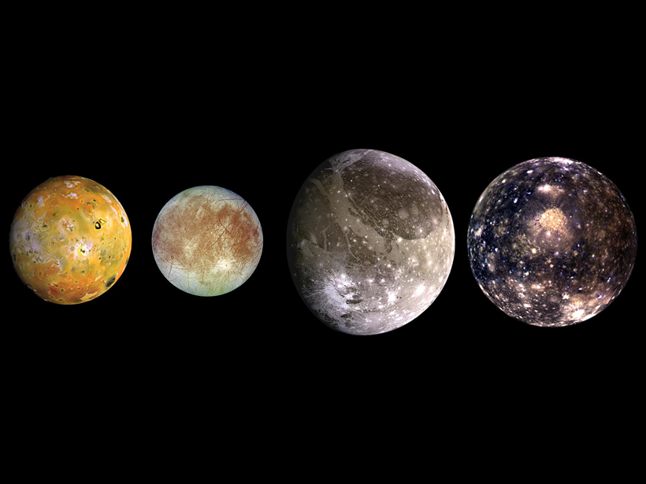

Jupiter má 79 pojmenovaných měsíců. Z toho 47 jich je menších než 10 kilometrů v průměru a více než 50 z nich bylo objeveno až v tomto tisíciletí. Čtyři největší měsíce, známé jako „galileovské měsíce“, jsou Io, Europa, Ganymed a Callisto.
Io
S průměrem 3642,6 km se jedná o čtvrtý největší měsíc ve sluneční soustavě. Na povrchu měsíce se nachází více než 400 aktivních sopek, což z Io činí geologicky nejaktivnější těleso sluneční soustavy.
Europa
Druhý nejbližší a současně nejmenší z Galileovských měsíců. Europa má 3100 km v průměru, takže je jen o něco málo menší než pozemský Měsíc, a současně je šestým největším měsícem ve sluneční soustavě.
Patří mezi tělesa s nejhladším povrchem ve sluneční soustavě.
Ganymed
Je největší Jupiterův měsíc a současně i největší měsíc ve Sluneční soustavě.Ganymedes má průměr 5 262 km. Od Jupiteru je vzdálen 1,07 milionu km a jeho doba oběhu okolo planety je 7,15 pozemského dne. Kdyby Ganymedes obíhal kolem Slunce místo okolo Jupitera, byl by považován za planetu.
Callisto
Druhým největším z Jupiterových měsíců a třetím největším měsícem ve sluneční soustavě. Těleso je tvořeno horninami a ledem v přibližně stejném množství.
Pravděpodobná přítomnost podpovrchového oceánu nechává otevřenou možnost, že by Callisto mohl hostit potenciální mimozemský život.